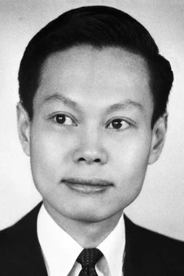

杨振宁Chen Ning Yang
普林斯顿高等研究院（美国新泽西州普林斯顿）Institute for Advanced Study, Princeton, NJ, USA 获奖时 · 份额 1/2 · 生于 Hofei, Anhwei，中国
物理学家长期假定自然界的各种对称性都成立：在一个左右互换、物质换成反物质的「镜像世界」里，物理规律应当一样。但某些基本粒子衰变的情形令这个前提受到质疑。1956 年，杨振宁与李政道提出理论：左右对称（宇称）在弱相互作用中并不成立；随后对钴同位素 β 衰变中电子运动方向的测量证实了这一点。
Chen Ning Yang was born on September 22, 1922, in Hofei, Anwhei, China, the first of five children of Ke Chuan Yang and Meng Hwa Loh Yang.
官方自传开篇：1922 年 9 月 22 日生于中国安徽合肥。 出处：官方自传页
官方获奖理由for their penetrating investigation of the so-called parity laws which has led to important discoveries regarding the elementary particles
看官方原文（facts 页 Work 段）the original wording
For a long time, physicists assumed that various symmetries characterized nature. In a kind of “mirror world” where right and left were reversed and matter was replaced by antimatter, the same physical laws would apply, they posited. The equality of these laws was questioned concerning the decay of certain elementary particles, however, and in 1956 Chen Ning Yang and Tsung Dao Lee formulated a theory that the left-right symmetry law is violated by the weak interaction. Measurements of electrons’ direction of motion during a cobalt isotope’s beta decay confirmed this.